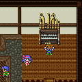
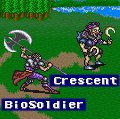
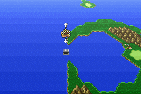
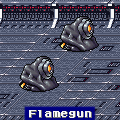

Story Line (2)
เรือพลังไอน้ำ
หลังจากได้เรือไอน้ำแล้ว สามารถแล่นเรือไปได้รอบโลก
แต่จะมี Side-Quest ให้ทำ คือ
Side-Quest "Istory"
หมู่บ้าน Istory อยู่ทางด้านทิศตะวันตกเฉียงเหนือของแผนที่
ที่นั่นมีเวทย์มนต์ต่างๆ ให้ค้นหามากมาย
(Black Magic Toad, Love Song, Summon Magic Ramuh)
Jacole
เมื่อเดินต่อมาอีกนิดจะเจอกับหมู่บ้าน Jacole
ภายใน Pub ของหมู่บ้าน Jacole จะมี Piano04 ให้เล่นด้วย

* Note : อย่าลืมเล่น Piano ให้ครบทุกอันด้วย จะได้ Song
เป็นของตอบแทน
* Note : หากยังไม่ได้เก็บ Learning Magic Exploder
สามารถเก็บจาก Bomb ได้
จุดมุ่งหมายต่อไปคือ หมู่บ้าน Crescent ที่อยู่ทางทิศตะวันออกเฉียงใต้ของแผนที่
Crescent
เมื่อเข้าไปภายในหมู่บ้าน Crescent จะพบว่า
เรือไอน้ำของ Batz จะหลุดออกไป และโดนน้ำวนดูดหายไป
ภายในหมู่บ้าน จะมีบ้านของนักกวี
เขาจะสอน Life Song ให้ Butz ด้วย

และภายในบ้านของนักกวี จะมี Piano05 ให้เล่นด้วย
* Note : อย่าลืมเล่น Piano ให้ครบทุกอันด้วย จะได้ Song
เป็นของตอบแทน
* Note : รอบๆ หมู่บ้านจะมีศัตรูบางตัวที่ให้ Item ดีๆ ควรเก็บไว้ด้วย

BioSoldier หาก "ขโมย" จะได้ War Hammer
Crescent หาก "ขโมย" จะได้ Silver Bow และบางครั้งเมื่อชนะจะได้รับ
Doom Axe ด้วย
Chocobo Forest
ลงมาด้านล่างของเกาะ จะเจอป่าโจโกโบะ
ภายในจะมี Chocobo สีม่วง (ดำ) อยู่ด้วย
เมื่อจับมันได้ ทีแรกมันจะบินไม่ได้ เพราะน้ำหนักเกิน
Faris จึงตีหลังมัน ทำให้มันคาย Crystal ออกมา 2 ชิ้น
Get 2 jobs
Hunter
Bard
* Note : อาชีพและ Ability ที่น่าใช้ตอนนี้ คือ
Hunter สามารถเรียก Animal มาช่วยเหลือได้ และหากเก็บจน Master จะโจมตี 4
ครั้งได้
Bard สามารถใช้ "Sing" ร้องเพลงได้
เมื่อได้ Chocobo สีม่วง จะสามารถบินไปได้แทบทุกแห่ง
โดยไม่สามารถบินผ่านยอดเขาสูงได้ และสามารถลงจอดได้เฉพาะในป่าเท่านั้น
Side-Quest "Lix"
หากบินไปด้านเหนือของ Wind Shrine
จะเจอหมู่บ้าน Lix ซึ่งเป็นบ้านเกิดของ Butz
จากนั้นกลับไปยังห้องสมุดเพื่อบอกข่าวร้ายแก่ Cid และ Mid
แต่ Cid และ Mid กลับมีข่าวที่น่าประหลาดใจ นั่นก็คือ
มีคนพบเห็นกษัตริย์ Tycoon ด้วย ทางเมืองร้างด้านตะวันตก
แต่ต้องเดินผ่านทะเลทรายซึ่งเต็มไปด้วยทรายดูด
Quicksand Desert
เมื่อเข้ามาภายในจะเจอทรายดูด ทำให้ไม่สามารถผ่านไปได้
แต่ Cid และ Mid จะทำการเรียก "หนอนทะเลทราย" ออกมา
เมื่อพวก Butz สามารถปราบมันได้ ก็สามารถเดินผ่านลำตัวมันเข้าไปได้
Boss : Sandworm
HP : 3,000
Weakness : Water
* Note : Sandworm จะโผล่ออกมาจากรูได้ทั้ง 3 รู หากโจมตีพลาดไปโดน
"Hole" มันจะปล่อย Gravity ออกมา
* Note : ใช้ AquaRake โจมตีเพียงครั้งเดียวสร้างความเสียหายถึง 4,500
(ทีเดียวตาย)
* Note : ภายในทะเลทรายแห่งนี้ มีวิหารอยู่ด้วย แต่ประตู Lock ไม่สามารถเข้าไปได้ในตอนนี้
Ruined City
เมื่อออกมาจากทะเลทรายได้แล้ว ลงมาด้านทิศใต้จะเจอเมืองร้างแห่งนี้
ภายในจะพบเห็นกษัตริย์ Tycoon
เมื่อตามไปได้สักพักจะเจอหลุมพราง ทำให้ตกลงไปชั้นล่าง
และจะทราบว่า แท้จริงแล้ว Faris เป็นพี่สาวของ Lenna
ด้านล่าง จะเจอทางวาร์ปไปอีกแห่งหนึ่ง
แต่เมื่อวาร์ปไป ปรากฏว่าเครื่องวาร์ปจะพัง ทำให้วาร์ปกลับไม่ได้
บริเวณนี้หากสำรวจจะเจอเวทย์ขาว "Size" ด้วย
* Note : สวิทต์ที่เปิดเข้าไปครั้งแรกให้ตอบ "No" แล้วครั้งที่สองจึงตอบ
"Yes" จึงจะเข้าไปได้
เดินต่อไปจะเจอสวิทต์อีกอันหนึ่ง
เมื่อกดจะทำให้ Cid และ Mid ที่ขี่ Chocobo ดำกลับมายังป่า Chocobo ตกลงมาด้านล่าง
ปรากฏว่า ด้านล่างนี้เป็นฐานทัพเรือ ซึ่งเรือไอน้ำที่ถูกน้ำวนดูดลงมาก็อยู่ที่นี่เหมือนกัน
อีกทั้งยังมีเรือเหาะอีกด้วย ซึ่งสิ่งก่อสร้างพวกนี้สร้างขึ้นมาโดยการใช้อารยธรรมโบราณ
แต่เมื่อนำเรือเหาะขึ้นบิน กลับโดนศัตรูเข้าเล่นงาน
Boss : Crayclaw
HP : 2,000
Weakness : Lightning
Steal : Coral Sword
เมื่อได้เรือเหาะ ให้กลับไปยังเมืองร้าง แต่กลับพอยานเหาะขนาดยักษ์โผล่ขึ้นมา

เมื่อเห็นดังนั้น พวก Butz จึงกลับไปหา Cid และ Mid อีกครั้ง
Cid บอกว่า ยานเหาะนั้นใช้พลังจาก Crystal ดิน
และมีบางคนเดินเครื่องยานเหาะนั้น ไม่แน่อาจเป็นกษัตริย์ Tycoon
ส่วนการจะขึ้นไปบนยานเหาะนั้นได้ ต้องทำให้เรือเหาะที่ Butz ใช้อยู่ บินสูงกว่านี้
และต้องใช้ส่วนประกอบในการสร้างคือ Adamantium (Adamantite)
เมื่อได้ยินดังนั้น Galuf เลยบอกว่า อุกาบาตที่เขาเดินทางมานั้น มี Adamantium
เป้าหมายต่อไปคือ อุกาบาตที่ Galuf ใช้เดินทางมายังโลก
Meteor at Tycoon
กลับมายังอุกาบาตใกล้ๆ กับปราสาท Tycoon
ภายในอุกาบาตจะเก็บ Adamantium ได้
แต่จะเจอศัตรูบุกโจมตี
Boss : AdamanTiMi
Level : 20
HP : 2,000
Weakness : Ice
* Note : หากมีเวทย์ Blue L5 Doom จะสามารถฆ่ามันได้ภายในครั้งเดียว
เมื่อได้ Adamantium ให้นำกลับไปให้ Cid และ Mid
เขาทั้งสองจะปรับปรุงเรือเหาะให้สามารถบินขึ้นสูงได้

จากนั้นบินขึ้นไป (กด A แล้วสามารถเลือกบินขึ้นหรือลงได้)
จะเจอกับยานเหาะลำใหญ่ ซึ่งมีป้อมปืนป้องกันอยู่ทั้หมด 5 จุด
Boss : Rocket

HP : 2,500
Weakness : Lightning
* Note : เก็บ Learning Magic จาก Rocket 1 เวทย์ คือ Misslie
Boss : Flamegun

HP : 2,400
Weakness : Lightning
* Note : เก็บ Learning Magic จาก Flamegun 1 เวทย์ คือ Emission
ซึ่งป้อมปืนจะมีอยู่ทั้งหมด 4 ป้อม ป้อมละ 2 กระบอก
วิธีปราบแบบง่ายๆ ให้ใช้ Summon Ramuh หรือ Terrain ก็ได้
เมื่อทำลายป้อมปืนได้ทั้ง 4 แห่งแล้ว จะเจอปืนใหญ่ตรงกลาง
Boss : Sol Cannon (Soul Gun)
HP : 9,000
Weakness : Lightning
Boss : Launcher
Level 50
HP : 1,500
ใช้ L5 Doom ทำให้ Launcher พังภายในครั้งเดียว
ส่วน Sol Cannon จะยิงปืนเลเซอร์ออกมา พลังโจมตีรุนแรงมาก
อีกทั้งยังทำให้ HP ลดลงอย่างต่อเนื่องอีกต่างหาก
เมื่อปราบมันลงได้ จะสามารถเข้าไปในยานเหาะได้
Next Story
3